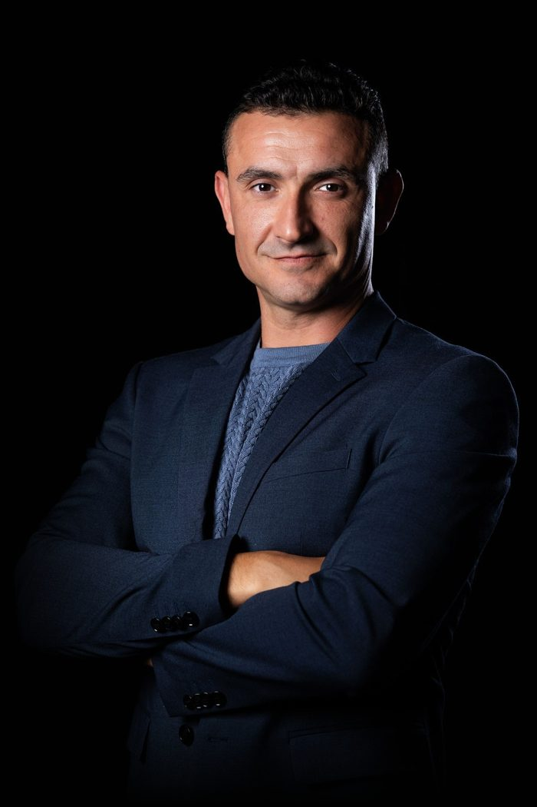

About us
Better leaders. Better systems. Better cities.
Civic Leaders Lab is a nonpartisan leadership institute building a new model of civic leadership, and the leaders ready to carry it.
Our goals
What we are here to do.
A new model.
Create a new model of civic leadership, built by the best minds, tested in real cities, and ready to lead in a new era.
New leaders.
Identify, attract, and prepare natural leaders, then train them, educate them, and make them ready to serve in city leadership.
An American future.
Build an innovative movement for the benefit of America that stops the dangerous expansion of radical Islam in the United States, and ensures that America’s future remains American, rooted in Western values.
How we work
Research the present. Create the future. Share what works.
We study what actually works, around the world. We bring exceptional minds together to challenge old assumptions and design new models. We turn ideas into pilots, measure results with data and AI, and learn directly from residents and city teams.
We publish what we learn, openly. And we help cities, institutions, and leaders adapt what works, feeding every lesson back into the model.

From the founder
Cities are where leadership becomes visible.
I believe people want more than politics. They want leaders they can trust: leaders with vision, character, courage, competence, and the ability to produce real results.
Many of the people capable of that leadership are outside public life today. They are building companies, technologies, organizations, teams, and communities, because they do not yet see civic leadership as a place where they can thrive.
Civic Leaders Lab exists to change that.
Get involved
Help set a new standard of leadership.
Join the small circle of founding partners launching the first Fellowship.